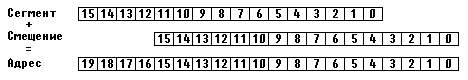

|
|
|
|
Адреса и указатели
Оперативная память ПК представляет собой совокупность элементарных ячеек для хранения информации - байтов, каждый из которых имеет собственный номер. Эти номера называются адресами, они позволяют обращаться к любому байту памяти.
Турбо Паскаль предоставляет в распоряжение программиста гибкое средство управления динамической памятью - так называемые указатели. Указатель - это переменная, которая в качестве своего значения содержит адрес байта памяти.
В ПК адреса задаются совокупностью двух шестнадцатиразрядных слов, которые называются сегментом и смещением. Сегмент - это участок памяти, имеющий длину 65536 байт (64 Кбайт) и начинающийся с физического адреса, кратного 16 (т.е. О, 16, 32, 48 и т.д.). Смещение указывает, сколько байт от начала сегмента необходимо пропустить, чтобы обратиться к нужному адресу.
Адресное пространство ПК составляет 1 Мбайт (речь идет о так называемой стандартной памяти ПК; на современных компьютерах с процессорами 80386 и выше адресное пространство составляет 4 Гбайт, однако в Турбо Паскале нет средств, поддерживающих работу с дополнительной памятью; при использовании среды Borland Pascal with Objects 7.0 такая возможность имеется). Для адресации в пределах 1 Мбайта нужно 20 двоичных разрядов, которые получаются из двух шестнадцатиразрядных слов (сегмента и смещения) следующим образом (рис.6.1): содержимое сегмента смещается влево на 4 разряда, освободившиеся правые разряды заполняются нулями, результат складывается с содержимым смещения.

Puc.6.1. Схема формирования адреса в ПК
Фрагмент памяти в 16 байт называется параграфом, поэтому можно сказать, что сегмент адресует память с точностью до параграфа, а смещение - с точностью до байта. Каждому сегменту соответствует непрерывная и отдельно адресуемая область памяти. Сегменты могут следовать в памяти один за другим без промежутков или с некоторым интервалом, или, наконец, перекрывать друг друга.
Таким образом, по своей внутренней структуре любой указатель представляет собой совокупность двух слов (данных типа WORD), трактуемых как сегмент и смещение. С помощью указателей можно размещать в динамической памяти любой из известных в Турбо Паскале типов данных. Лишь некоторые из них (BYTE, CHAR, SHORTINT, BOOLEAN) занимают во внутреннем представлении один байт, остальные - несколько смежных. Поэтому на самом деле указатель адресует лишь первый байт данных.
|
|
|
|